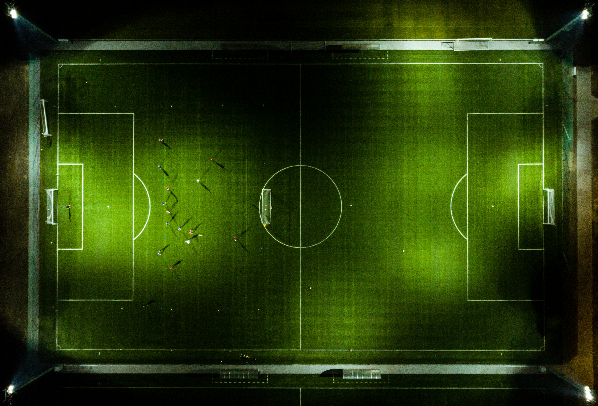

<link rel="stylesheet" href="leermas.css" />
<main class="news-page-container">
  <article class="news-article">
    <header class="news-article-header">
      <span class="news-tag">Fútbol</span>
      <h1 class="news-main-title">Crónica: El Clásico que definió la temporada</h1>
      <div class="news-meta">
        <span class="news-author">Por Redacción Sportly</span>
        <span class="news-date">24 Feb, 2026</span>
      </div>
    </header>

    <div class="news-featured-image">
      
    </div>

    <section class="news-content">
      <p class="news-lead">
        El Santiago Bernabéu fue testigo de un enfrentamiento que quedará grabado en los libros de historia. Madrid y Barça no solo jugaban por tres puntos, sino por el orgullo y el liderato definitivo.
      </p>

      <p>
        Desde el pitido inicial, la intensidad fue la nota dominante. El planteamiento táctico de Carlo Ancelotti sorprendió con una presión alta que dificultó la salida de balón del conjunto de Xavi Hernández. Los primeros 20 minutos fueron un monólogo blanco, culminado con un disparo al palo de Vinícius Jr.
      </p>

      <h2 class="news-sub-title">El punto de inflexión</h2>
      <p>
        Sin embargo, el Barça reaccionó tras el descanso. La entrada de Pedri dio claridad al centro del campo, permitiendo que Lewandowski encontrara espacios entre los centrales. Fue en el minuto 65 cuando un desmarque de ruptura cambió el destino del encuentro...
      </p>

      <div class="news-embedded-card" xlu-include-file="../../templates/template-card-resumen-popup/card-resumen-popup.html">
      </div>

      <p>
        Al final, el resultado de 2-1 a favor de los locales deja la liga prácticamente sentenciada, aunque las sensaciones en ambos campos sugieren que la rivalidad está más viva que nunca.
      </p>
    </section>

    <footer class="news-article-footer">
      <a href="../pagina-inicio/inicio.html" class="news-back-btn">&larr; Volver a noticias</a>
    </footer>
  </article>
</main>